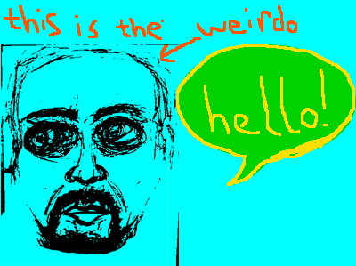
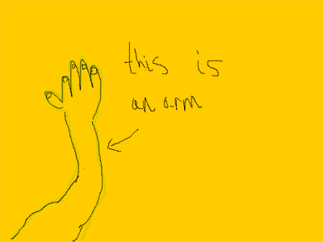

I was a good feller while I grew up. One of my friends played Dungeons and Dragons. What a weirdo, that fellow was.
"you are a weirdo." I would say to him.
"you are the weirdo." He would say to me.

